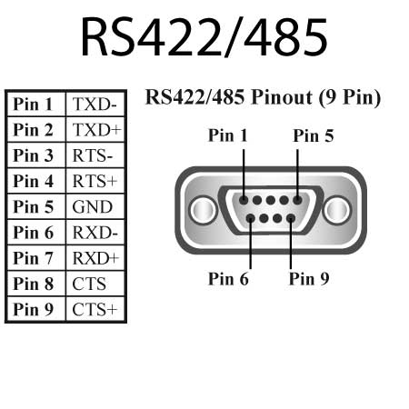
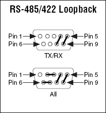

RS-422 y RS-485
Los estándar RS-422/485 añaden una serie de ventajas importante sobre el RS-232:
- Distancias de hasta 1200 m
- Tasas de datos de hasta 10 Mbps
- Hasta 32 emisores en la misma línea (Sólo en RS-485)
- Hasta 32 receptores en la misma línea
Las velocidades mayores y distancias mayores no se pueden alcanzar al mismo tiempo. Para un par trenzado normal la velocidad máxima a 1200 m es aproximadamente de 90 kbps. Para conseguir la velocidad máxima de 10 Mbps el cable debe tener menos de 6 m
Los conductores que realizan la transmisión se les suele llamar A y B en la terminología de RS-485. En RS-422 suelen llamarse Tx+ y Tx- , y Rx+ y Rx-.
Los voltajes en RS-422 y 485 son muy similares:
- -1,5 a - 6 voltios para el 1 lógico
- +1,5 a +6 voltios para el 0 lógico

IMPORTANTE: Tanto en RS-485 como en RS-422 es necesario usar resistencias de terminación al final de los extremos del cable.
TROUBLESHOOTING: Conexión de Loopback:
